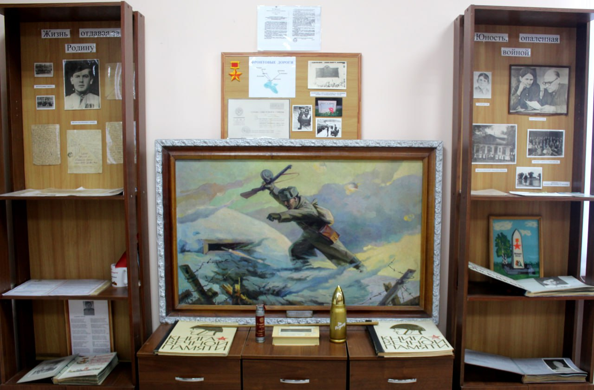
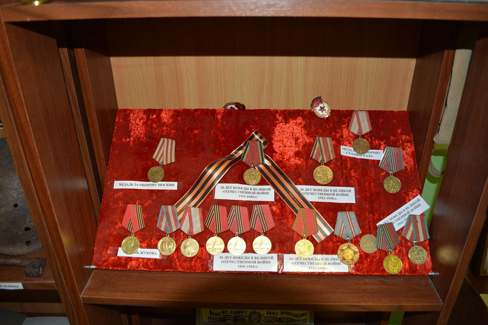
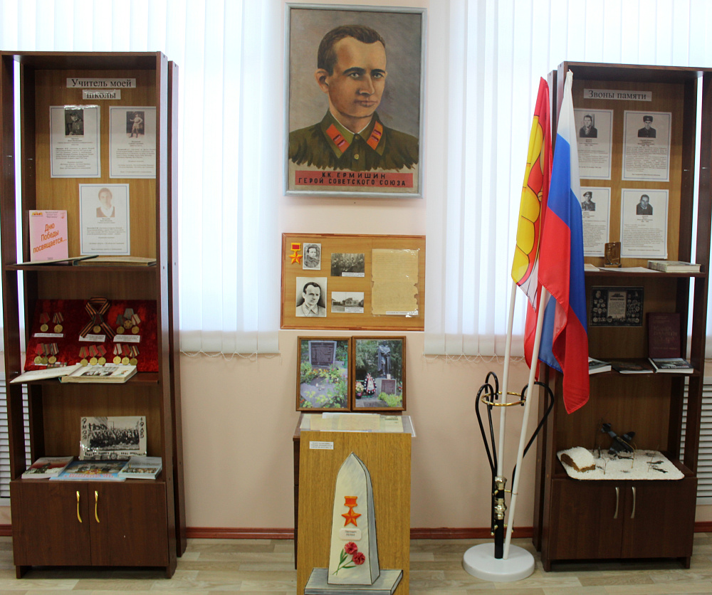
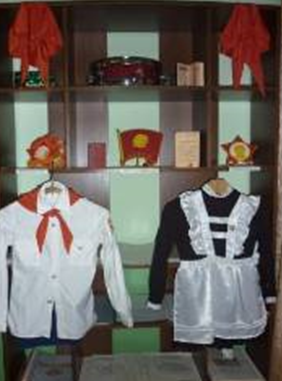
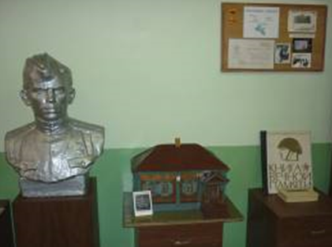

МКОУ Хреновская СОШ №2 им.Левакова
IV региональный фестиваль технического творчества и робототехники «ШишОФФест»

О нас
Музей «Поиск» - краеведческий музей Хреновской СОШ №2, открытый в к 65-летию победы, в нем собраны материалы об истории школы. История нашей школы идет с 1931 года. Из ее стен вышли два Героя Советского Союза В.И. Леваков и К.К. Ермишин. Между школой и воинской частью, где служил В.И. Леваков, существовала тесная связь. В нашей школе долгое время существовал Зал Боевой Славы, где хранились письма с фронта, портреты героев, бюст В.И. Левакова и многое другое.
Экспозиции
-

«Звоны памяти»
Собран материал об односельчанах, погибших в мирное время, выполняя свой долг
-

«Учитель моей школы»
Экспозиция посвящена учителям, воевавшим во время Великой отечественной войны.
-

«Герой Советского Союза – К.К. Ермишин»
-

«Школьное общественное движение»
-

«Герой Советского Союза – В.И Леваков»